Puma SE is a German multinational corporation who design and manufacture athletic and casual footwear, apparel, and accessories, headquartered in Herzogenaurach, Bavaria, Germany.
Puma is the third largest sportswear manufacturer in the world.[6] The company was founded in 1948 by Rudolf Dassler (1898–1974). In 1924, Rudolf and his brother Adolf "Adi" Dassler had jointly formed the company Gebrüder Dassler Schuhfabrik ('Dassler Brothers Shoe Factory'). The relationship between the two brothers deteriorated until they agreed to split in 1948, forming two separate entities, Adidas and Puma. Following the split, Rudolf originally registered the newly established company as Ruda (derived from Rudolf Dassler, as Adidas was based on Adi Dassler), but later changed the name to Puma. Puma's earliest logo consisted of a square and beast jumping through a D, which was registered, along with the company's name, in 1948. Puma's shoe and clothing designs feature the Puma logo and the distinctive "Formstrip" which was introduced in 1958.
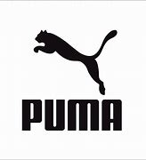 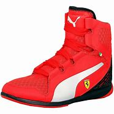 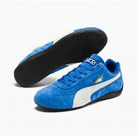 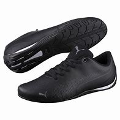 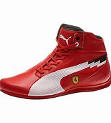 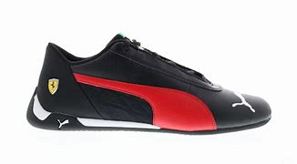,
NEXT
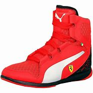 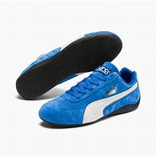 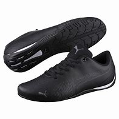 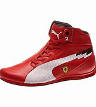 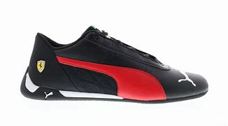,
NEXT